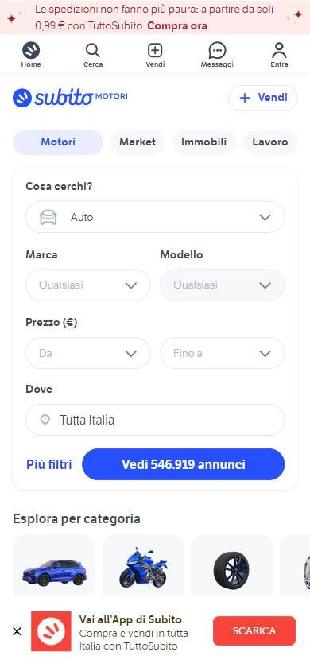
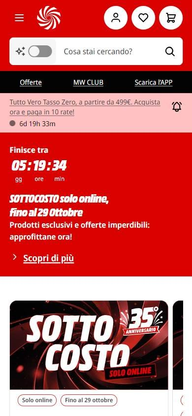
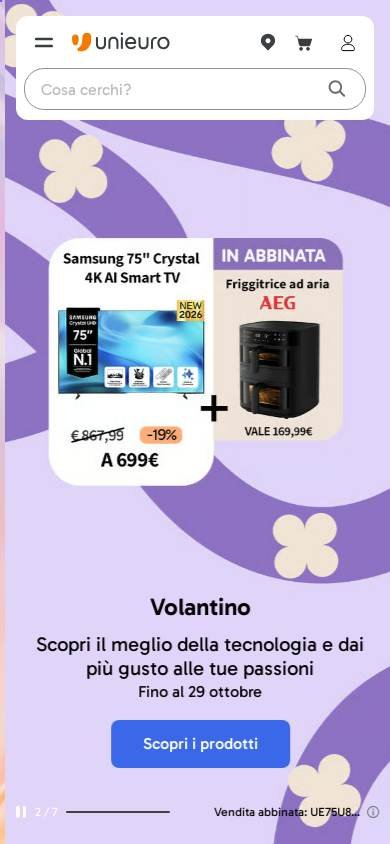

Tienda online que compite por buen precio
Los seleccionados
Los tres sitios más visitados de Italia, según estadísticas de tráfico.
En resumen: lo que hacen los líderes
La pantalla de inicio de cada uno



Estilo visual
Colores, imágenes, tipografía y cuánta información muestran.
Tu estilo visual debería…
- Dos colores de marca y etiquetas de descuento redondeadas.
Lo que tienen en común: Paletas de dos colores de marca y esquinas redondeadas; los precios y descuentos se destacan en etiquetas.
La paleta de cada uno
Medida sobre la primera pantalla. Los colores de marca salen del header; el resto muestra cuánto espacio ocupa cada color.
Así lo resuelve cada uno
Ficha comparativa
| Aspecto | Subito | MediaWorld | Unieuro |
|---|---|---|---|
| Paleta | Acotada: azul + blanco | Acotada: rojo + negro + blanco | Acotada: violeta + naranja |
| Imágenes | Íconos de categorías | Fotos de campaña en bloques | Fotos de producto en folleto |
| DensidadIgual en todos | Media | Media | Media |
| EsquinasIgual en todos | Redondeadas | Redondeadas | Redondeadas |
Header
La franja de arriba con el logo y los accesos.
Tu header debería…
- Íconos de tienda, favoritos y carrito a la derecha.
Lo que tienen en común: Logo a la izquierda y accesos de cuenta a la derecha; las tiendas de electrónica usan íconos en círculo.
Así lo resuelve cada uno


Ficha comparativa
| Aspecto | Subito | MediaWorld | Unieuro |
|---|---|---|---|
| Fondo | Blanco | Rojo de marca | Blanco sobre fondo violeta |
| Logo | Azul, a la izquierda | A la izquierda | Naranja, a la izquierda |
| A la derecha | «Accedi», «Registrati» y botón «Vendi» | Tienda, cuenta, favoritos y carrito (íconos en círculo) | Tiendas, carrito y cuenta |
Buscador
La barra para buscar.
Tu buscador debería…
- Texto de ayuda en forma de pregunta directa.
Lo que tienen en común: Los tres preguntan «¿Qué estás buscando?» en el buscador.
Así lo resuelve cada uno

Ficha comparativa
| Aspecto | Subito | MediaWorld | Unieuro |
|---|---|---|---|
| Tamaño | Formulario con filtros (qué, dónde, precio) | Protagonista, con búsqueda con IA | Mediano, redondeado |
| Texto de ayuda | «Cosa cerchi?» | «Cosa stai cercando?» | «Cosa cerchi?» |
Primera pantalla
Lo primero que se ve debajo del header.
Tu primera pantalla debería…
- Precio actual grande, precio anterior tachado y el porcentaje en una etiqueta.
Lo que tienen en común: Promociones con precio y porcentaje bien visibles; los clasificados priorizan el buscador con filtros.
Así lo resuelve cada uno
Ficha comparativa
| Aspecto | Subito | MediaWorld | Unieuro |
|---|---|---|---|
| Formato | Buscador con filtros como protagonista | Cuenta regresiva + 3 bloques de campaña | Folleto con productos y precios |
| Precio | — | Grande en los bloques | Precio grande y tachado con porcentaje |